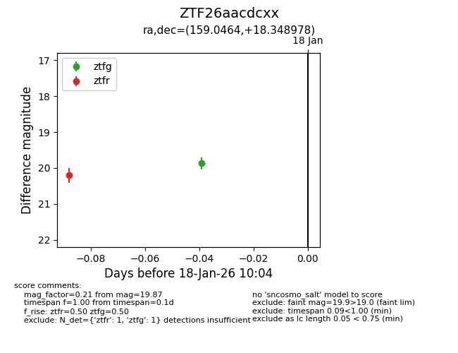
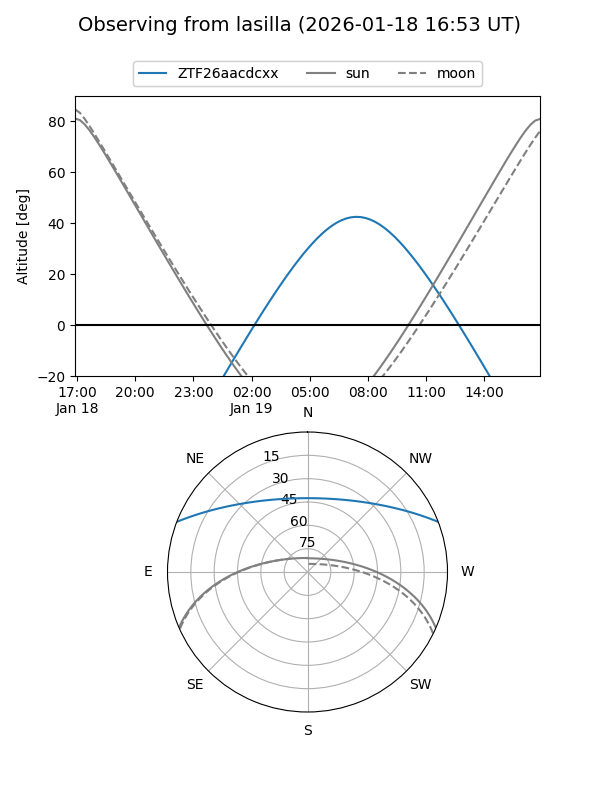
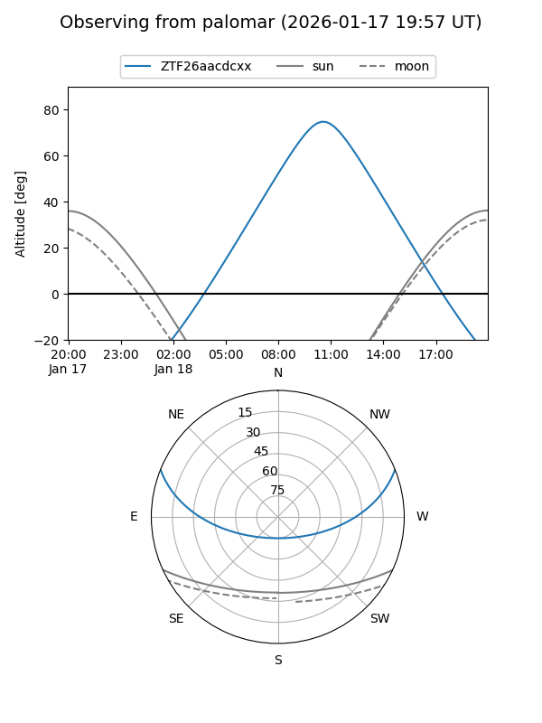

ZTF26aacdcxx
Target ZTF26aacdcxx at 2026-01-18 08:50
Aliases and brokers:
FINK: link
Lasair: link
ALeRCE: link
alt names
ZTF26aacdcxx (ztf,fink_ztf)
Coordinates:
equatorial (ra, dec) = 159.0464,+18.34898
equatorial (HMS+DMS) = 10:36:11.13,+18:20:56.32
galactic (l, b) = (221.4833,+57.71507)
Flags:
Photometry:
last ztfr=20.21
1 ztfr detections
Lightcurve

Visibility


Additional plots